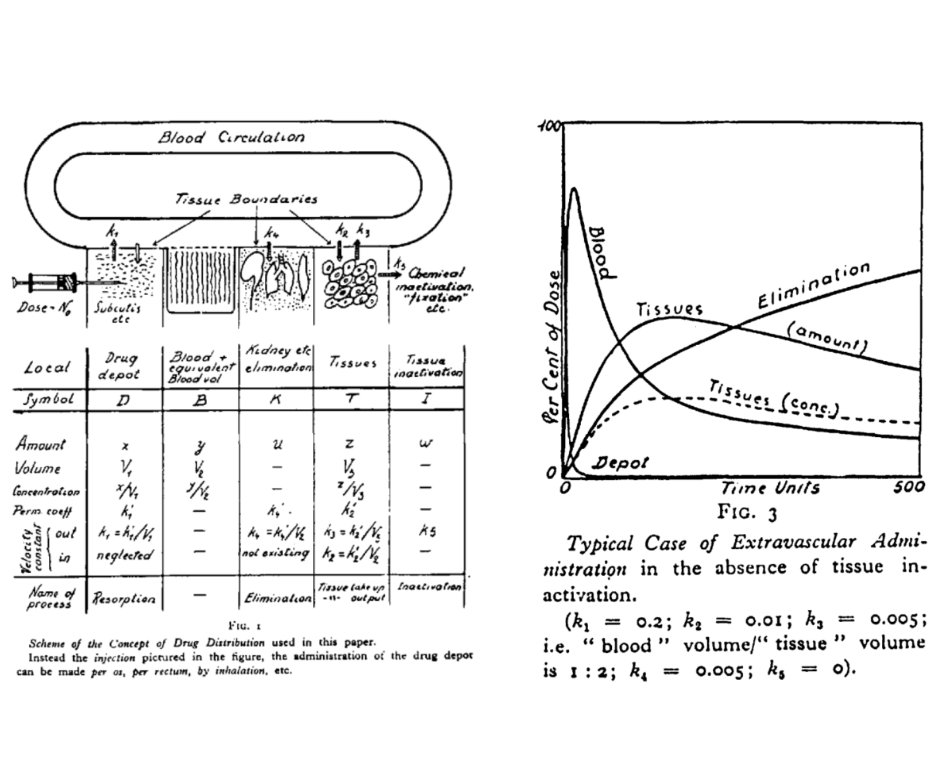
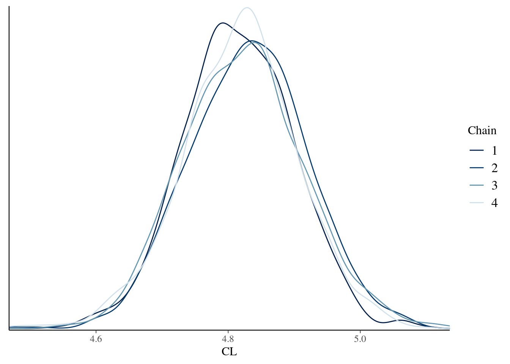
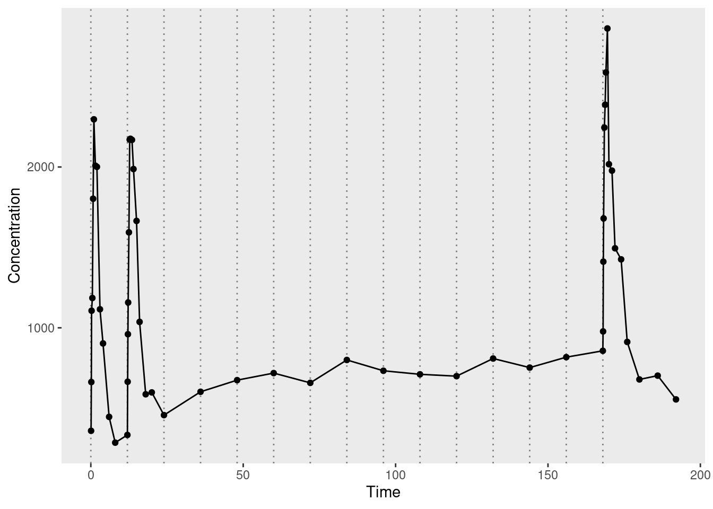

![]()
remotes::install_cran(
pkgs = "cmdstanr",
repos = c(
"https://mc-stan.org/r-packages/",
getOption("repos")
)
)In recent months I’ve been gradually teaching myself pharmacometrics, and writing blog posts as I go. I started out writing about relatively simple methods for non-compartmental analysis, moved on to talking about compartmental analysis with Stan, and then to population pharmacokinetic models in Stan. Now it feels like time for me to move on to looking at Torsten.
What’s Torsten, you ask?
Torsten is essentially a forked copy of Stan that has a collection of functions added that can be useful in pharmacometric analyses. As described by Elmokadem et al (2023):
Torsten is a library of Stan functions built to facilitate analysis of pharmacometric data … [It] contains functions to build specific linear compartmental models as one and two-compartment models with first-order absorption into the central compartment, general linear models that can be expressed as a system of linear ordinary differential equations (ODEs), general compartmental models that can be expressed as a system of ODEs.
The name “Torsten” refers to Torsten Teorell, described as the father of pharmacokinetics. The preview image of this post is taken from the figures in a 1937 paper by Teorell:

I do like knowing where the names of things come from, and the history to different disciplines. But to be fair that’s not the purpose of this post, so let’s set the history to one side and take a look at the software. The website is quite clear that Torsten is currently (as of version 0.89rc) a prototype:
WARNING: The current version of Torsten is a prototype. It is being released for review and comment, and to support limited research applications. It has not been rigorously tested and should not be used for critical applications without further testing or cross-checking by comparison with other methods. We encourage interested users to try Torsten out and are happy to assist. Please report issues, bugs, and feature requests on our GitHub page.
My goals in this post are modest:
- Install Torsten and make sure it’s working
- Understand the data format expected by the Torsten-specific solvers
- Work my way through the model file for simple two-compartment analysis
- Work out what’s going on regarding analytic solutions in Torsten
As usual, the notes are mostly intended for the benefit of future-me, who absolutely will have forgotten all this in a week from now. But it’s possible that other people may find them helpful too I suppose. Anyway, here goes…
Installation
Installing Torsten starts by cloning the GitHub repository. Just recently I’ve gotten into the habit of using the GitHub command line tool for tasks like this, so the command I used was this:
cd ~/GitHub
gh repo clone metrumresearchgroup/TorstenBut really, anything that clones a repository will work.
Once you have a copy of the repo, you can build Torsten in any number of ways. Given that I’m usually working from R, the most convenient way for me to do this is with the cmdstanr package. If you don’t have the cmdstanr package, you need to install it first. It’s not on CRAN but you can install it by adding the Stan repository to the repos path when calling remotes::install_cran():
Next, you need to make sure that cmdstanr uses the Torsten version of Stan, and not any other version of Stan that you might have installed on your system. This is important because Torsten supplies various functions that we’ll need, and especially important in my case because I also have a “vanilla” copy of Stan installed elsewhere on my laptop. Here’s how I do that:
torsten_dir <- "~/GitHub/Torsten"
cmdstanr::set_cmdstan_path(fs::path(torsten_dir, "cmdstan"))CmdStan path set to: /home/danielle/GitHub/Torsten/cmdstanIn a moment, I’m going to try to compile a Stan/Torsten model (and indeed compile Torsten itself), so it’s important to make sure the C++ toolchain is set up properly. If you already have C++ compilers set up on your machine (which I do) then you probably don’t need to do anything special to make sure that everything compiles properly, but just to be safe we’ll check:
cmdstanr::check_cmdstan_toolchain()The C++ toolchain required for CmdStan is setup properly!Excellent. Now comes the acid test: let’s see if we can use Torsten to build and sample from a Stan model that specifically requires Torsten functions. I’m following the instructions on the installation page here, more or less. But I’m going to walk through the process a little more slowly than those instructions do.
The first step here is to compile the Stan model. The very first time you do this, it can take a moderately long time because two things are happening:
- First, the compiler need to compile the modified copy of Stan that Torsten ships with. That takes a while, but fortunately it only has to be done once.
- Second, the compiler needs to compile the “pk2cpt” model itself. This is fairly fast. This compilation step only happens when the model binary is out of date.
Fortunately for me I’ve already done this step once before and I have both binaries compiled already so it all happens instantaneously. In any case, here’s the code:
model_dir <- fs::path(torsten_dir, "example-models", "pk2cpt")
model_src <- fs::path(model_dir, "pk2cpt.stan")
model <- cmdstanr::cmdstan_model(model_src)The key thing to note here is that the “pk2cpt.stan” source code relies on Torsten-specific functions that don’t exist in vanilla Stan. It won’t work if you’re not using the Torsten version of Stan. The mere fact that it compiles is itself telling us that it’s all configured correctly.
So now we fit the model:
model_fit <- model$sample(
data = fs::path(model_dir, "pk2cpt.data.R"),
init = fs::path(model_dir, "pk2cpt.init.R"),
seed = 123,
chains = 4,
parallel_chains = 2,
refresh = 500,
show_messages = FALSE
)Running MCMC with 4 chains, at most 2 in parallel...
Chain 1 Iteration: 1 / 2000 [ 0%] (Warmup)
Chain 2 Iteration: 1 / 2000 [ 0%] (Warmup)
Chain 1 Iteration: 500 / 2000 [ 25%] (Warmup)
Chain 2 Iteration: 500 / 2000 [ 25%] (Warmup)
Chain 1 Iteration: 1000 / 2000 [ 50%] (Warmup)
Chain 1 Iteration: 1001 / 2000 [ 50%] (Sampling)
Chain 2 Iteration: 1000 / 2000 [ 50%] (Warmup)
Chain 2 Iteration: 1001 / 2000 [ 50%] (Sampling)
Chain 1 Iteration: 1500 / 2000 [ 75%] (Sampling)
Chain 2 Iteration: 1500 / 2000 [ 75%] (Sampling)
Chain 1 Iteration: 2000 / 2000 [100%] (Sampling)
Chain 1 finished in 7.7 seconds.
Chain 2 Iteration: 2000 / 2000 [100%] (Sampling)
Chain 3 Iteration: 1 / 2000 [ 0%] (Warmup)
Chain 2 finished in 7.7 seconds.
Chain 4 Iteration: 1 / 2000 [ 0%] (Warmup)
Chain 3 Iteration: 500 / 2000 [ 25%] (Warmup)
Chain 4 Iteration: 500 / 2000 [ 25%] (Warmup)
Chain 4 Iteration: 1000 / 2000 [ 50%] (Warmup)
Chain 4 Iteration: 1001 / 2000 [ 50%] (Sampling)
Chain 3 Iteration: 1000 / 2000 [ 50%] (Warmup)
Chain 3 Iteration: 1001 / 2000 [ 50%] (Sampling)
Chain 4 Iteration: 1500 / 2000 [ 75%] (Sampling)
Chain 3 Iteration: 1500 / 2000 [ 75%] (Sampling)
Chain 4 Iteration: 2000 / 2000 [100%] (Sampling)
Chain 4 finished in 7.5 seconds.
Chain 3 Iteration: 2000 / 2000 [100%] (Sampling)
Chain 3 finished in 8.0 seconds.
All 4 chains finished successfully.
Mean chain execution time: 7.7 seconds.
Total execution time: 15.7 seconds.When doing this interactively, you should set show_messages = TRUE so that you can see the “informational messages”. As I’m coming to learn, it’s grossly typical of ODE models that you get a few warning messages during the early stages of warmup. But Stan messages tend to be quite good, and in this case they’re quite helpful in reassuring us that there’s not a problem in this instance (they occur early while the MCMC sampler is in a very weird part of the space and then disappear). I’ve suppressed them here because they make the quarto blog output messier than it needs to be. All good.
To draw a pretty picture showing the posterior distribution of the clearance rate parameter for this model (CL), we can do this:
# remotes::install_cran("bayesplot")
bayesplot::mcmc_dens_overlay(model_fit$draws("CL"))
That looks right. Torsten is configured correctly, the model compiles, the sampler works, and the posterior distributions plotted here mirror the ones that are secretly tucked away in an output file here:
[torsten-directory]/example-models/pk2cpt/deliv/figure/density.pdfMy first goal is accomplished. We are good to go!
The data file
Okay, so now that I’ve succeeded in doing something with Torsten, it would be nice to have a better sense of what precisely I’ve done. Obviously1 I’ve run a Stan model of some kind on some data set, but the Torsten documentation doesn’t really go into a lot of detail here.
I’ll start by taking a look at the data. I’ve cached a copy of the data file along with this post, located at ./example/pk2cpt_data.R relative to this quarto document. The file defines the variables needed by Stan as R vectors, but to make my life a little easier I’ll organise them into a tibble that resembles a NONMEM-style event schedule:
source("./example/pk2cpt_data.R")
pk2cpt_data <- tibble::tibble(
cmt = cmt,
evid = evid,
addl = addl,
ss = ss,
amt = amt,
time = time,
rate = rate,
ii = ii,
dv = NA
)
pk2cpt_data$dv[iObs] <- cObs
pk2cpt_data# A tibble: 54 × 9
cmt evid addl ss amt time rate ii dv
<dbl> <dbl> <dbl> <dbl> <dbl> <dbl> <dbl> <dbl> <dbl>
1 1 1 14 0 80000 0 0 12 NA
2 2 0 0 0 0 0.083 0 0 359.
3 2 0 0 0 0 0.167 0 0 663.
4 2 0 0 0 0 0.25 0 0 1106.
5 2 0 0 0 0 0.5 0 0 1185.
6 2 0 0 0 0 0.75 0 0 1802.
7 2 0 0 0 0 1 0 0 2296.
8 2 0 0 0 0 1.5 0 0 2008.
9 2 0 0 0 0 2 0 0 2001.
10 2 0 0 0 0 3 0 0 1115.
# ℹ 44 more rowsI am firmly of the opinion that these aren’t good variable names, but they are completely standard in the field so I’m just going to have to memorise them. To that end, and despite the fact that I have written a version of this about a dozen times already, here’s what each of those variables refers to:
cmt: compartment number to which the row refersevid: event id (0=observation, 1=dose, 2=other)addl: number of additional identical doses givenss: is it steady-state dosing? (0=false, 1=true)amt: dose amount administered at this timetime: time of observation/administrationrate: rate of drug infusion (=0 for bolus administration)ii: interdose interval: time between additional dosesdv: the dependent variable (observed concentration)
The key point here is that (unlike in my previous post where I used a slightly different data structure in my bespoke Stan model), Torsten functions expect input variables that look very similar to those used in NONMEM. Fair enough.
Now that I have a sense of the data structure, let’s plot it to see what the observed pharmacokinetic function looks like. In the plot below, the dotted vertical lines mark the moments at which additional doses were administered. The circular markers connected by solid lines represent the observed drug concentrations:
pk2cpt_data |>
dplyr::filter(evid == 0) |>
ggplot2::ggplot(ggplot2::aes(time, dv)) +
ggplot2::geom_vline(
xintercept = (0:14) * 12,
color = "grey50",
linetype = "dotted"
) +
ggplot2::geom_path() +
ggplot2::geom_point() +
ggplot2::scale_y_continuous(breaks = (0:3) * 1000) +
ggplot2::labs(x = "Time", y = "Concentration") +
ggplot2::theme(panel.grid = ggplot2::element_blank())
The solid lines connecting the dots are a bit misleading. For the first, second, and last doses, measurements are taken regularly enough that you can see the rise and fall of drug concentration associated with each dose. For all other doses, however, there’s only a single measurement taken immediately before the dose is administered, with the result that it looks like a fairly flat function through the middle of the data. This makes total sense from an experimental design point of view, of course, it’s just important to remember that there’s a good reason why the observed data has this slightly odd shape.
Objective #2 accomplished. Time to move to the next one.
The model file
Let’s take a look at the source code for the Torsten/Stan model that I fit in the last section. For the sake of my sanity I’m not going to use the actual .stan file that Torsten distributes. In the original version there’s no explanation of what the parameters mean or what the data variables are.
I’m about 99% certain that the reason for this is that among pharmacometricians it is “understood” that everyone already knows the notational specifications used in NONMEM, and consequently nobody bothers to say what those terms mean. To be honest I find it a little frustrating. If you want new users to consider Torsten as a viable modelling tool for pharmacometrics, I think it’s a bad idea to make it a prerequisite that new users already know NONMEM. But as I am Queen only of this blog and not of statistics generally, and my guess is that the primary target audience for Torsten are pharmacometricians who have already used NONMEM for many years, I’ll restrict myself to mild grumbling and simply fix the comments so that the “hidden curriculum” aspect to all this is no longer quite so hidden. Nevertheless, given that the vast majority of my readership belong to the 99.99% of statisticians and data scientists who aren’t professional pharamacometricians,2 I’ve added a lot more annotation to my version of the file:
./example/pk2cpt.stan
// Two compartment model using Torsten analytical solver
data{
int<lower = 1> nt; // number of events
int<lower = 1> nObs; // number of observations
array[nObs] int<lower = 1> iObs; // indices of observation events
// NONMEM data
array[nt] int<lower = 1> cmt; // compartment number
array[nt] int evid; // event id (0=observation, 1=dose, 2=other)
array[nt] int addl; // number of additional identical doses given
array[nt] int ss; // is it steady-state dosing? (0=false, 1=true)
array[nt] real amt; // dose amount administered at this time
array[nt] real time; // time of observation/administration
array[nt] real rate; // rate of drug infusion (0 for bolus administration)
array[nt] real ii; // interdose interval: time between additional doses
vector<lower = 0>[nObs] cObs; // observed concentration (the dv)
}
transformed data{
vector[nObs] logCObs = log(cObs);
int nTheta = 5; // number of ODE parameters describing the pharmacokinetic function
int nCmt = 3; // number of compartments in model (1=gut, 2=central, 3=peripheral)
}
parameters{
real<lower = 0> CL; // clearance rate from central compartment
real<lower = 0> Q; // intercompartmental clearance rate
real<lower = 0> V1; // volume of distribution, central compartment
real<lower = 0> V2; // volume of distribution, peripheral compartment
real<lower = 0> ka; // absorption rate constant from gut to central
real<lower = 0> sigma; // standard deviation of measurement error on log-scale
}
transformed parameters{
array[nTheta] real theta; // parameters of the pharmacokinetic function
matrix<lower = 0>[nCmt, nt] x; // drug amounts in each compartment over time
// predicted drug concentrations in the central compartment
row_vector<lower = 0>[nt] cHat; // row vector, one element per event
vector<lower = 0>[nObs] cHatObs; // column vector, one element per *observation*
// bundle pharmacokinetic parameters into a vector
theta[1] = CL;
theta[2] = Q;
theta[3] = V1;
theta[4] = V2;
theta[5] = ka;
// compute the pharmacokinetic function (drug amounts in all compartments)
x = pmx_solve_twocpt(time, amt, rate, ii, evid, cmt, addl, ss, theta);
cHat = x[2, :] ./ V1; // compute drug concentrations in central compartment
cHatObs = cHat'[iObs]; // transform to column vector & keep relevant cells only
}
model{
// informative prior
CL ~ lognormal(log(10), 0.25);
Q ~ lognormal(log(15), 0.5);
V1 ~ lognormal(log(35), 0.25);
V2 ~ lognormal(log(105), 0.5);
ka ~ lognormal(log(2.5), 1);
sigma ~ cauchy(0, 1);
// measurement errors are log-normally distributed
logCObs ~ normal(log(cHatObs), sigma);
}
generated quantities{
array[nObs] real cObsPred; // simulated observations
for(i in 1:nObs) {
cObsPred[i] = exp(normal_rng(log(cHatObs[i]), sigma));
}
}Even with the additional commenting, it’s still a little impenetrable unless you’re a pharmacometric insider, because the pharmacokinetic model is not represented anywhere in this Stan code. It’s simply understood that this is a two-compartment model by virtue of the fact that the pmx_solve_twocpt() function is called, and all the details of what that means have been rendered invisible in the process.
That’s not wrong from the Torsten perspective – and probably necessary – but at the same time it makes the code difficult to follow for anyone who isn’t a pharmacometrician. So let’s make it a bit more explicit, yes? What precisely is the ODE system solved by the pmx_solve_twocpt() function? Fortunately, the actual ODEs are described by Margossian et al (2022) and are in fact the same ones I used in a previous post.
I’ll reproduce the ODEs here in exactly the same form as they are presented by Margossian et al:3
\[ \begin{array}{rcl} \displaystyle\frac{du_{\mbox{gut}}}{dt} & = & -k_a u_{\mbox{gut}} \\ \\ \displaystyle\frac{du_{\mbox{cent}}}{dt} & = & k_a u_{\mbox{gut}} - \left( \displaystyle\frac{\mbox{CL}}{V_{\mbox{cent}}} + \displaystyle\frac{Q}{V_\mbox{cent}} \right) u_{\mbox{cent}} + \displaystyle\frac{Q}{V_{\mbox{peri}}} u_{\mbox{peri}} \\ \\ \displaystyle\frac{du_{\mbox{peri}}}{dt} & = & \displaystyle\frac{Q}{V_\mbox{cent}} u_{\mbox{cent}} - \displaystyle\frac{Q}{V_{\mbox{peri}}} u_{\mbox{peri}} \end{array} \]
There’s still a little friction here because mathematical notation is never precisely identical to variable naming in code (nor should it be). But it does help to have a little lookup table like this one:
| Stan variable | Mathematical notatation | Description |
|---|---|---|
x[1, :] |
\(u_{\mbox{gut}}\) | Drug amount in the gut |
x[2, :] |
\(u_{\mbox{cent}}\) | Drug amount in central compartment |
x[3, :] |
\(u_{\mbox{peri}}\) | Drug amount in peripheral compartment |
ka |
\(k_a\) | Absorption rate constant from gut |
CL |
\(\mbox{CL}\) | Elimination clearance from central |
Q |
\(Q\) | Intercompartmental clearance |
V1 |
\(V_\mbox{cent}\) | Volume of central compartment |
V2 |
\(V_\mbox{peri}\) | Volume of peripheral compartment |
The differential equations are all expressed in terms of drug amounts rather than drug concentrations, and the pmx_solve_twocpt() function solves for drug amounts in each compartment at each point in time. However, pharmacometric functions specify how drug concentrations change over time, so the Stan code makes the appropriate transformation. With that in mind I find it helpful to extend the table slightly:
| Stan transformation | Mathematical notatation | Description |
|---|---|---|
x[2, :] ./ V1 |
\(u_{\mbox{cent}} / V_\mbox{cent}\) | Drug concentration in central compartment |
x[3, :] ./ V2 |
\(u_{\mbox{peri}} / V_\mbox{peri}\) | Drug concentration in peripheral compartment |
Having written that out, the Stan code seems pretty interpretable. There’s still something missing here insofar as it’s not entirely clear how the pmx_solve_twocpt() function computes the drug amounts in each compartment at all time points, but at least it’s now clear what it is computing.
Where can I find the analytical solutions?
In my previous post on pop-PK modelling, I managed to get far enough along that I could implement my own two-compartment models in Stan, without using Torsten. However, in order to do that I had to rely on numerical ODE solvers to compute solutions to the pharmacokinetic functions. It turns out that was unnecessary. On the Torsten home page, it indicates that:
One and two compartment models are based on analytical solutions of governing ODEs.
So presumably there are some analytical solutions somewhere! A little awkwardly, the documentation doesn’t explicitly say what the analytical solutions for the two-compartment model are or where they are taken from, but a little bit of digging gives us some answers. First, looking through the Torsten source reveals the relevant parts of the code:
- This file appears to be where the
torsten::pmx_solve_twocpt()function is defined. - This file appears to be where the analytical solutions are specified.
Second, a little hunting around on the internet unearths this handy little paper by D’Argenio and Bae (2019) that derives the analytical solutions of interest. Skimming the paper quickly suggests it’s not too complicated an exercise to implement analytical solutions (especially if you’re not trying to optimise for performance), and even the derivations don’t look too painful. I may return to that topic in a later post, but for now I feel reassured that I know where to look when I want to dive deeper.
Useful resources
I suspect that at a future date I’ll want to pick up from where this post leaves off. With that in mind, these are the resources I relied on when putting it together:
Bayesian PBPK modeling using R/Stan/Torsten and Julia/SciML/Turing.Jl. Journal article by Ahmed Elmokadem, Yi Zhang, Timothy Knab, Eric Jordie, and Bill Gillespie, January 2023.
Flexible and efficient Bayesian pharmacometrics modeling using Stan and Torsten, Part I. Journal article by Charles Margossian, Yi Zhang, and Bill Gillespie, April 2022.
Bayesian modeling workflow for pharmacometric applications using bbr.bayes with Stan/Torsten. Slides by Bill Gillespie, June 2023.4
Bayesian Data Analysis Using Stan/Torsten for Pharmacometric Applications. Slides by Bill Gillespie, May 2018.
Analytical solution of linear multi-compartment models with non-zero initial condition and its implementation with R. Journal article by David D’Argenio and Kyun-Seop Bae, June 2019.
Kinetics of distribution of substances administered to the body. I. The extravascular modes of administration. Journal article by Torsten Teorell, 1937. Discussed in Torsten Teorell, the Father of Pharmacokinetics by Lennart Paalzow, 1995.
Stan and R for Pharmacometrics. Book by Casey Davis, Yasong Lu, Arya Pourzanjani, and Pavan Vaddady.5
Done!
…and with that, I’ve accomplished my very limited goals for this post, and for once in my life I shall bloody well refrain from expanding on it further and turning a short blog post into a monograph.
Footnotes
I mean… “obvious” in the sense that I’m a person who has used Stan before and the output from the previous section is very familiar to me as Stan output.↩︎
Number obviously fictitious but probably in the right ballpark.↩︎
The same ODE system appears in the Torsten documentation for the two-compartment model, using \(y\) in place of \(u\) and \(y^\prime\) in place of \(du/dt\). I probably should have used that version in this post, but I found the Margossian et al version first and I’m too lazy to rewrite the LaTeX expressions.↩︎
Thank you to Mike Smith for pointing me to this resource.↩︎
Thank you to Tim Waterhouse for pointing me to this resource.↩︎
Reuse
Citation
BibTeX citation:
@online{navarro2023,
author = {Navarro, Danielle},
title = {Getting Started with {Torsten}},
date = {2023-07-15},
url = {https://blog.djnavarro.net/posts/2023-07-15_torsten},
langid = {en}
}
For attribution, please cite this work as: